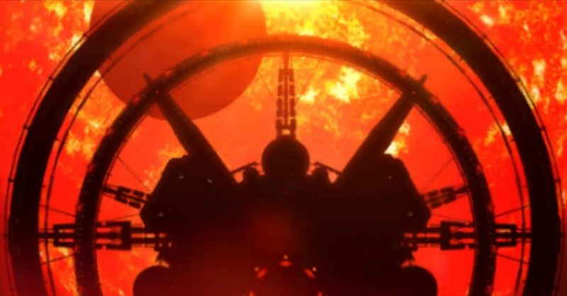

In the galaxy of Elite Dangerous there are the Galnet News posts that give us insight into the world around us. In addition to the main story played out in front of us via those articles, Elite Dangerous has a rich background story that pilots can stumble across through various methods including trilateration through listening posts or just stumbling over them.
Canonn has collected as many of these background stories as possible but if we have missed any people let us know via our Discord and we’ll be happy to expand on this page.
Contents:
- Ancient Probes
- Tourist Beacons
- Generation Ships
- Installations
- Listening Posts
- Megaships
- Settlements
- Ships
- SRVs
- Surface Sites
- Unknown
Ancient Probes
These ancient probes were launched by humanity long ago, becoming our first interstellar space craft. Today they remind us of our humble beginnings.
| Name | Description |
| New Horizons | Humanity’s first mission to the dwarf planet Pluto. When this spacecraft launched, Pluto was still a full fledged planet |
| Voyager 1 | Long ago, this was NASA’s longest lived mission and was humanity’s first spacecraft to leave the solar system |
| Voyager 2 | This little probe was the first to directly measure the density and temperature of the interstellar plasma |
Tourist Beacons
Tourist and Visitor Beacons can be discovered all across the galaxy, but they mostly found within the human inhabited bubble. These beacons tell the stories of commanders, some no longer with us, as well as the history and lore of the Elite Dangerous universe, and mark beautiful sites to visit.
Due to the number of beacons they will not be listed below, instead, please visit our Tourist and Visitor Beacons article. Image Credit: CMDR iMetal
| Name | Description |
| Brooks Galactic Tours Beacons | A series of memorial beacons for the late Michael Brooks, to honour his memory amongst the stars |
| The Sanderlyn Interviews | Jade Sanderlyn interview Navy Admirals from the Alliance, Empire and Federation |
Generation Ships

Generation Ships are a particular class of Megaship, launched in the days before true FTL travel. They traversed the space between the stars at subluminal speeds, while their inhabitants were born, lived, procreated, and died onboard. This page details the list of known ships and they are listed below.
| Name | Description |
| Achlys | The life support systems fail on the Achlys killing the passengers and crew. The ship AI then works to become sentient and is awaiting orders |
| Artemis | A passenger smuggled a dog on board the Artemis that was unfairly acuised of killing a bunch of people, unfortunately they got the wrong perp and there is a wolf amongst them |
| Atlas | A malfunction onboard the Atlas means the ship is unable to stop. Chief Engineer Tom Edwards says goodbye to his partner Jean as he makes the ultimate sacrifice |
| Demeter | A shortage of food onboard the Demeter leads to the passengers and crew splitting into warring tribal factions until only one, and then none, are left |
| Epimetheus | Something happened to the crew and passengers of the Epimetheus leaving the prisoner Joe Collins alone in his cell, and all that isolation leads him to hearing the whispers of the void |
| Golconda | This odd example of a generation ship found with living crew kicked off a community goal which ended with the Federation building a new outpost for the crew |
| Hyperion | The passengers of the Hyperion believe a child onboard, Zachariah, is the second coming leading to the death of Commander Jefferson and the death of everyone on board |
| Lazarus | The Lazarus hit something in deep space causing it to become stranded until the worst happened |
| Lycaon | A strain of influenza ravages the Lycaon, or at least that’s what they thought it was until Dr. Munroe discovered its alien origin. After that, it was too late |
| Odysseus | A mysterious sickness swept across the generation ship, sadly ending its mission |
| Phanes | After failing to find an inhabitable planet the crew of the Phanes lie to the passengers, saying they are the last humans. The lie gets uncovered by Warrant Officer Noonan after Admiral Kerr slips up and chaos erupts |
| Phobos | The Phobos successfully made it to her destination and established multiple settlements that were attacked by local animal life |
| Pleione | A mistake from the previous medical officer of the Pleione lead to only male births, leading to their extinction |
| Spear of Hope | The sudden appearance of a habitable planet led the crew and passengers of the Spear of Hope to abandon ship, but they forgot Technician Farrow who tried to get back to them |
| Thetis | A digital signal from the communication array of the Thetis causes everyone to go crazy and kill each other |
| Venusian | A pirate fleet boards the Venusian and despite Officer Gant’s efforts to defend the ship, XO Deacon’s betrayal seals their fate |
Installations

Installations are orbital structures with various purposes and unlike starports and outposts they lack docking facilities. While some offer scenario missions or a location to use a hatch breaker limpet to obtain more cargo there are some that expand on the lore of Elite Dangerous.
Unfortunately, after EDDB.io shut down, the installation list I was using was no longer available. We’ve been attempting to get the data back and thanks to CMDR Column01 in the Canonn Discord, we have the below json file of all installations reported to EDDN to date (2024.02.06). We hope you find this useful. Image Credit: CMDR Chewcat1.
| Name | Description |
| Communication Hub Zeta 12 | The tech officer aboard picks up what seems to be an organic signal from the Pleiades. Following the leads takes you to a Thargoid Structure |
| Halley Terminal | This installation holds the story of the Silver Comet, a short story in the “Tales From The Frontier” |
| Isinor Unauthorised Installation | |
| Istanu Unauthorized Installation | Scarlett gets into a slavers ring that traffics illegal goods through ignorant mules but unfortunately they find out she’s a cop |
| Janus Corp. Medical Research Center | Dr Mitch and Officer Wyatt perform human experimentation and after a visit from Corporate, one of them (Tommy) escapes |
| Kappa Fornacis Unauthorized Installation | Part of a story between two rival Gangs |
| Karis Unnamed Installation | A pair get in over their head while trying to make some quick cash by repairing damages done by the “Pirate Lord Luca” |
| Panacea Medical Centre | This installation holds Salomé’s final words to her followers |
| Pirate Cove | The Pirate Cove was added for a section of the 2017 24 hour charity livestream as part of a segment where Dav followed clues, and is not known to have another purpose. |
| Relay Station PSJ-17 | The logs of this installation lead to multiple other lore sites |
| San Tu Scientific Installation | Part of the Sol/Achenar/Gateway Numbers Beacon Mystery |
| Slough Unauthorized Installation | Other then a Type-9 Heavy named Jack Attack piloted by an Elite NPC Big Boo, this installation seems to have no other scientific interest |
| Squirrel’s Nest Bar | The Squirrel’s Nest seems to be quite the raucous place with over a dozen scannable log entries |
Listening Posts

A large amount of lore can be found from the various listening posts scattered around in the black as detailed in listening post article. Some listening posts themselves are part of the lore and are shown in the table below.
| Name | Description |
| Joy Senne ICE Beacon | Contains clip’s from the Joy Senne ICE-Cast with Heimar Borichev, discussing the Thargoid Advocacy Project and pro-peace sentiments. |
| Omega Grid | The Imperial Emperor, Arissa Duval, was kidnapped but recovered thanks to cracking the Omega Grid |
| Memorial: CMDR Garak | A Memorial dedicated to CMDR Garak |
| Memorial: Family is More than Blood | A Memorial dedicated to CMDR Hirobadger |
| Memorial: Evelyn Faye Roy | Located 698 Ly from Colonia, is the system Evelyn’s Light with a Neutron Star as the primary star. Orbiting that star is a memorial to Evelyn Faye Roy |
| Memorial: for Fluk | A Memorial dedicated to Fluk. |
| Memorial: Pollux D568 | A Memorial dedicated to CMDR Tony Pox |
| Pilots’ Memorials | These memorials are placed in 7 systems in human occupied space |
| Shamash Murder Signal | Part of the 3309 Halloween mystery. The personnel of Garrett Orbital and Grey Swan go crazy and start killing each other due to some signal. Similar to the events of the Generation Ship Thetis |
| Teorge Listening Posts | These listening posts are tied to the Lady Kahina Loren, also known as Salomé |
| Unregistered Comms Beacons | Unregistered Comms Beacons have been found in many systems within the bubble and in deep space. The linked UCB page covers their locations |
Megaships

There are a whole plethora of megaships in the Elite Dangerous. While the generation ship type of megaship is broken out separately, there are several different classes of “standard” megaship as detailed here. Most of them are non-dockable as shown here but some, like the rescue megaships are. The list below shows megaships connected to the lore. Image credit: CMDR Xeno Crimson.
| Name | Description |
| Acropolis | |
| Adamastor | The Azimuth Biochemical sistership of Hesperus found during the Halloween 3306 event |
| AK-302 | This megaship appears to have been attacked by pirates and the log holds the crew’s last message |
| ALF-895 | This megaship appears to have been attacked by Thargoids and the log holds the crew’s last message |
| AR-005 | This megaship appears to have been attacked by Thargoids and the log holds the crew’s last message |
| BTG-237 | This megaship appears to have been attacked by Thargoids and the log holds the crew’s last message |
| Dedicant | A megaship owned by the Order of the Far God, True Chapters sect. Onboard were teams of Federal Agents alongside the cultists and it seems the cultists called their friends to deal with the interlopers, maybe getting more than they bargained for |
| DFX-056 | This megaship appears to have been attacked by Thargoids and the log holds the crew’s last message |
| FGK-342 | This megaship appears to have been attacked by pirates and the log holds the crew’s last message |
| FPR-12 | This megaship appears to have been attacked by pirates and the log holds the crew’s last message |
| GCS Sarasvati | This megaship holds the story of Project Thunderchild, Project Equinox, and the return of the Thargoids as detailed by Cassandra Lockhart and Julilan Lyons |
| HDR-617 | This megaship appears to have been attacked by Thargoids and the log holds the crew’s last message |
| Hesperus | The Azimuth Biochemical sistership of Adamastor was found by the Scriveners Clan |
| IPD-038 | This megaship appears to have been attacked by Thargoids and the log holds the crew’s last message |
| JJF-048 | This megaship appears to have been attacked by Thargoids and the log holds the crew’s last message |
| KS-92 | This megaship appears to have been attacked by pirates and the log holds the crew’s last message |
| KSL-878 | This megaship appears to have been attacked by Thargoids and the log holds the crew’s last message |
| Nemb | A pirate attack left the Nemb adrift and the commander took drastic measures |
| Overlook | A Black Flight megaship part of the Project Seraph storyline that came under attack from Thargoids |
| Pandora | The Pandora came under attack after detecting an unidentified signal on the surface of a nearby planet |
| PTK-179 | This megaship appears to have been attacked by Thargoids and the log holds the crew’s last message |
| The Alexandria | |
| The Cete | The crew of the Cete under Professor Melville went off to find more guardian ruins, but the Professor’s obsession with surpassing Ram Tah doomed them all |
| The Kingfisher | The Kingfisher was humanity’s attempt to hold peace talks with the Thargoids after the detection of the Unknown Interstellar Anomalies (now known as Maelstroms), unfortunately it was destroyed |
| The Zurara | After performing their mission of marking Earth-like or terraformable worlds, the cargo crew onboard the Zurara snapped, killing the ship and themselves, stranding the rest of the crew. Tied to the Salomé story |
| Vanguard | |
| Victoria’s Song | A crew of the Victoria’s Song found something they shouldn’t have out in the Aries Dark Region and were silenced for it |
| Welcome Deviation | A bookkeeper falls in love with the daughter, Erin, of the lead pirate, Norman, and tried to escape |
| WKS-559 | This megaship appears to have been attacked by pirates and the log holds the crew’s last message |
| ZIG-097 | This megaship appears to have been attacked by Thargoids and the log holds the crew’s last message |
Settlements

Most of the background lore in Elite Dangerous comes from a variety of abandoned settlements scattered around the galaxy. These stories usually have sad endings but all of them build and deepen our understanding of the galaxy around us.
| Name | Description |
| Almedia Landing | INRA experimented with Thargoid drive technology here where engineer Effie Ratling was able to successfully developed a prototype based on their drive technology ending with the death of the test pilot |
| Betterton Outpost | Superintendent Callahan tries to quell widespread panic over reports of strange sightings and decides to evacuates the colony too late to save them from Thargoid attack |
| Botanical Research Station FNA-559 | Some researchers found some local flora that released spores into the environment resulting in the death of all involved |
| Carmichael Point | This site lured in Thargoids to try INRA’s new anti-xeno weapons and ended up facing a mothership that took them out |
| Colony SNB-86 | The operations officer of the site, Megan Riley, notices that there is something wrong with the air systems and what was originally thought to be a maintenance issue turned out to be something much worse |
| Columbus Expedition Camp 14 | After a rough start coming out of the jump into a meteor storm leads to a hopeful end and even a romance between crew members Woods and Symons |
| Comms Facility 89563 | Lieutenant Commander Hurst reaches out to Admirall McTieran about unidentified craft harassing civilian traffic, only to come face to face with it herself |
| Communication Array Delta 69 | J Bottone’s team finds an extra body that appears out of nowhere and then something causes them al to disappear |
| Conflux Alpha Site | These logs show the beacons are being dropped around Earth-like words but otherwise the trip was uneventful for this crew |
| Conflux Beta Site | This expedition gets pulled out of witch-space and starts to go a little stir crazy out in the void |
| Conflux Delta Site | The crew of this voyage pushed their ship too hard and blew a hyperdrive initiator coil. They ended up getting pulled in by a neutron star and jettisoned the logs to war future explorers |
| Conflux Gamma Site | After dropping some beacons off in the black the crew had an otherwise uneventful trip |
| Crowther’s Rest | A memorial settlement for Kenneth Crowther |
| Dav’s Hope | Seismic activity sealed the fate of this mining community. This is also one of the best processed material farming spots |
| Dixon Dock | Stealing from Don Antonaci can lead to a significantly shortened lifespan |
| Dominic’s Corner | Secretary Miller details an account of developing new weapons for Aegis and following a visit from Mr. Black encounters the aliens face to face |
| Exploration Camp JSPR-003 | Commander Norris and the team get lost, leaving the Habitation Engineer alone who then attempts too find them |
| Exploration Camp JSPR-003 (#2) | Seems to be a copy of Exploration Camp JSPR-003 |
| Exploration Camp C-NO4 | Maybe this lifeless world wasn’t so lifeless, maybe it still isn’t |
| Extraction Site HS-98 | An abandoned settlement found by a survey group who in turn succumb to whispers in the dark |
| Extraction Site V-81 | The miners find some kind of probe in their mine shaft and get silenced for it |
| Formidine Rift Alpha Site | After pushing the ship to a jump drive malfunction, the crew starts hearing voices in white-space |
| Formidine Rift Beta Site | After dropping off the last of the beacons the hyperdrive malfunctions leaving the crew stranded |
| Formidine Rift Delta Site | The engineer of this crew unveils the beacons have an odd code called ‘Exodus’ in their BIOS but something took our her support ship leaving her stranded |
| Formidine Rift Gamma Site | The crew detected a strange signal out in the void and started seeing strange lights during hyperspace and determines they are being watched |
| Fort Asch | This facility was ran by Azimuth as part of Project Seraph that had to be abandoned following their withdraw due to an attack on a Federal convoy |
| Geological Survey 23B | This site, lead by Professor Penelope Carver, had the first contact with Thargoid technology rewriting history as it was known. Tied with the Adamastor story |
| Gregorys Rest | After seeing some lights, one of the team members (Hopkins) goes crazy and kills the rest of the crew and likely his Rescuers |
| Hawkins Gap Alpha Site | The cargo seems to be a bunch of satellites but no one is allowed to go near them. Seems like the Hawking group is tied to the Formidine Rift group |
| Hawkins Gap Beta Site | No one knows why they are on this expedition or who is paying for it, they are just doing what they are told |
| Hawkins Gap Delta Site | A fleet of Anacondas headed out into the black and deployed some artefacts out in Hawkin’s Gap |
| Hawkins Gap Gamma Site | After deploying some beacons the crew heard something they shouldn’t have and “accidents” happen |
| Herpin Research Base | The crew of this research facility (including Paine, Peterson, Giordano, Scott, and Watts) find out too late they have been infected by a virus that turns them into dust as they sleep |
| Hogan Depot | This INRA facility acted as a transfer facility for the myciod used against the Thargoids, although they don’t seem to know what they were involved with |
| Hollis Gateway | The fungus that became mycoid was discovered here by a INRA junior researcher despite the chief researcher, Bexley Prince’s, reservation of how legit the finding was |
| Holloway Bioscience Research Facility 15 | Part of the Halloween 3307 event where spider-ike creatures attacked the original crew and those that came looking |
| Iraxon Lane | The story of the anti-Thargoid work done by Caleb Wycherley of Azimuth working with INRA and the finding of the mycoid fungus |
| Jackson Enterprise | It seems the base was falling apart and poor leadership didn’t help the situation |
| Klatt Enterprises | Like Stack, this facility contains test pits where the mycoid agent was tested on the Thargoids to support INRA’s war effort |
| Lookout Military Test Facility | This military facility came under attack by its own Skimmers |
| Mayes Chemical Plant | Jarah Cook gets replaced after asking too many questions about the production of the mycoid virus for INRA and her replacement, Elgii Sung, tries to meet the unrealistic deadlines |
| Medical Research Base BJI-86 | A team searching for new cures instead found an incredibly lethal compound that one member, Deresta, tried to make off with |
| Medical Research Base MIR-14 | Research into a mood inhibitor results in some subjects into killing machines and a researcher ends it all before it can spread |
| Oaken Point | The main base of Project Seraph and tied to the Commander Hyford story and the Overlook megaship. The experiments here had test subjects connect to Thargoid vessels in an attempt to control them. Lead by Professor Thomas Dorne, these unethical experiments saw some success with test subjects H-8 (who died later) and D-2 (who escaped and was later identified as Seo Jin-ae) |
| Orion’s Folly | A navigation malfunction led the crew to be stranded on the wrong planet |
| Penal Colony BV-2259 | When delivering prisoners the inboard ship encountered some “alien” ship that seems to have followed it to the colony |
| Planet Dave Output | The sad fate of Commander Robinson who fought to survive until the end |
| Quarantine Site UC-001 | An exploration team stumbles over a quarantined settlement that unfortunately ends up killing the team including Miller, Jackson, Lee, and Bailey |
| Rawat Depot | An otherwise unremarkable settlement except for a hidden message that shows they had an encounter with a Thargoid ships |
| Research Base KG-3362 | Agronomist Khan writes to her leadership about her study into nano-pesticides which calls in some unwanted attention, first spotted by the maintenance operator Old Hank |
| Research Base LV 87 | Professor Helen Buchard gets a hold of an alien probe and with the help of Professor Collin cuts open the probe leading to it calling for help |
| Research Facility 5592 | A non-human and non-natural signal results in the classification of Doctor Lewis’s work |
| Scrump Landing | Barnabus Scrumpt writes his partner Jeremiah Slythe about a scrap deal and has an encounter with aliens |
| Serene Harbour | Tied to the Theta Seven story where a group of NMLA inmates broke out from this Imperial Penal Colony |
| Sharpe Works | Governor Tanaka writes his wife about how happy his term is ending, only to have his settlement come under attack by alien ships days later |
| Site 16 | Mr. Leon and his corporation experiment on their crew by starving them |
| Site 94 | Chief Blair and his mining crew find an underground temple that seems to call for help |
| Site 426 | A couple of slave labourers including Huke, Stuart, and Thorn attempt to take over the site |
| Stack | An INRA run facility where testing was done on the Thargoids to find their weakness. The site contains Thargoid holding pits with gruesome implications |
| Stuart Retreat | The INRA junior researched that discovered what became mycoid had a chance of conscience here after finding out what it was being used for |
| Taylor Keep | The story of how INRA pulled in Commander John Jameson to end the first Thargoid War |
| The Church of the Path | A potentially bugged site only giving 4 messages but there are 5 hinted at and tied to a crashed Sidewinder in Alpha Centauri |
| The Prophet | Paired with The Santum, this pair of settlements appear to have been run by the Far God cult and have been attacked by Thargoids. The logs detail the accounts of Kiona O’Connor (having second thoughts), Nash Severin (just loves destruction), Corinne de la Torre (bitter and vengeful), Noah Whiteleaf (environmentalist), and Nathan Summers (an inside Agent for the Federal Intelligence Agency) |
| The Sanctum | Paired with The Prophet, this pair of settlements appear to have been run by the Far God cult and have been attacked by Thargoids. The logs detail the accounts of Thaddeus MacRaith (true believer), Vanya Hargrave (true believer), Reuben Delgado (escaping pain), and Dr. Hester Dolmayne (true believer). |
| The Trial | Halloween 3308 event about judgement and absolution, but maybe not in the typical sense. Takes you to Vardey Prospecting, Goddard Mill and Downey’s Junkyard. |
| Velasquez Medical Research Center | Medical Officer Kiona Li of INRA developed a vaccine for the mycoid agent here |
Ships

In the vastness of space there is no shortage of crashed and abandoned ships, not all of them human. Note that these are persistent ship crashes. These stay across instances and time. It is possible to find crashed ships that are not persistent out in the black but since they are not constant they are not listed here.
| Name | Description |
| Ariane’s Pride | A crashed Type-9 Heavy with a happy ending |
| Belu Crashed Ship | Tied to the Unlisted Wreckage Site |
| Bug Killer Crashed Anaconda | Clark Barrow goes hunting for a non-human ship shutting down pilots and zooming off into the black, biting off more then he can chew |
| Charon Crashed Ship | An Anaconda crashed on this moon leaving no survivors. Beware that it is in a Trespass Zone |
| CMDR John Jameson Crashed Cobra MkIII | This story tells the other side of the hero, John Jameson’s, story on his mission to end the first Thargoid War |
| Col 285 Sector OP- b9-0 Unnamed Crash Site | This crash site seemed bugged and seems to be no longer available |
| Colonia Crash Site | A wreaked Type-9 Heavy known as Hyford’s Cache guarded by a Goliath in a trespass zone that contained the Unstable Data Core. As of August 3307 the UDC is gone as well as the trespass zone leading to a new message and new mysteries |
| Crashed Thargoid Scout #1 | A crashed Thargoid scout with some Thargoid materials around it |
| Crashed Thargoid Scout #2 | A crashed Thargoid scout with some Thargoid materials around it |
| Crashed Thargoid Scout #3 | A crashed Thargoid scout with some Thargoid materials around it |
| Crashed Thargoid Ship #1 | A crashed Thargoid interceptor with some Thargoid materials around it |
| Crashed Thargoid Ship #2 | A crashed Thargoid interceptor with some Thargoid materials around it |
| Crashed Thargoid Ship #3 | A crashed Thargoid interceptor with some Thargoid materials around it |
| Expedition Vessel Odysseus | The crew of this Anaconda tried everything they could to survive. Tied to Clark’s Rest and and SRV-Odysseus |
| HIP 14909 Distress Call | As of June 3306 the distress call no longer exists and it has been replaced by an Anomalous Signal containing a black box |
| Koli Discii Crashed Ship | An Anaconda carrying Brewer Corps and Caine Massey crates crashed on a moon leaving no survivors, tied to Gregorys Rest |
| Leucos Crashed Ship | An Anaconda carrying Brewer Corps and Caine Massey crates crashed on a moon leaving no survivors |
| LHS 2429 Crashed Ship | A crashed Type-9 Heavy that is most notable as a source of legal Hafnium 178 |
| Mercury Crashed Ship #1 | An Anaconda crashed on this planet leaving no survivors. Beware that it is in a Trespass Zone |
| Mercury Crashed Ship #2 | An Anaconda crashed on this planet leaving no survivors. Beware that it is in a Trespass Zone |
| Orrere Crashed Ship | An Anaconda carrying Brewer Corps and Caine Massey crates crashed on a moon leaving no survivors |
| Professor Carver’s Crashed Sidewinder | Professor Carver attempted to escape from the Adamaster and directly tied with its story |
| Proteus | An Anaconda launched from the Hesperus after it was attached. Located and the currently only known Thargiod/Guardian battle site, on a planet containing signs of both species. Look for the Point of Interest AZB2/H002255/SC-01 |
| Recon 6 Crash Site | It seems this pilot saw a Thargoid Structure and tried to report it before crashing |
| Renet Crashed Anaconda | A crashed Anaconda owned by some thieves. Did they get away with it or not? That’s up to you to decide. |
| Survey Vessel Stargazer | The crashed Diamondback Explorer of Luca Rekivek who found something he wasn’t support to and paid the price |
| The Bifrost | A crashed Anaconda that tells the story of Captain Powell of Canonn and how he, Red Wizard, and Kyp Shard got temporarily stranded after trying to make bootleg liquor using an obelisk from an ancient ruin |
| Trading Vessel MD-001 | This pilot keeps crashing and has decided to give us a few tips to survive out there |
| Trading Vessel MD-002 | This pilot keeps crashing and has decided to give us a few tips to survive out there |
| Trading Vessel MD-003 | This pilot keeps crashing and has decided to give us a few tips to survive out there |
| Trading Vessel MD-004 | This pilot keeps crashing and has decided to give us a few tips to survive out there |
| Transport Lakon Baker Gamma Sierra Heavy | A crashed ship added as an Easter Egg, revealing during a livestream with CMDR Dav |
| Transport Vessel Solomon | The pilot of the Solomon brought this Anaconda in for what turned out to be too hot of a landing |
| Unregistered Derelict | An abandoned Anaconda was found by a pair of salvagers, one named Janey, shows why you should always be careful when turning on the power |
SRVs

While not as common as crashed ships, there are a few wrecked SRVs laying around on various planets and moons. Note that these are persistent wrecked SRVs. These stay across instances and time. It is possible to find wrecked SRVs that are not persistent out in the black but since they are not constant they are not listed here.
| Name | Description |
| 34 Virginis Abandoned SRV | A honeymoon gone wrong |
| 44 k Virginis Abandoned SRV | Cheaters never prosper as Dom can tell you, if he was still alive |
| HIP 20556 Abandoned SRV | This site tells the story of Evans who liked doing barrel rolls in this SRV |
| SRV-Odysseus | The end of the Expedition Vessel Odysseus’s crew |
Surface Sites

These sites are smaller then settlements so have been classified separately. Usually these sites contain nothing more then a few crates or boxes with maybe a transmitter or two.
| Name | Description |
| Clark’s Rest | Tied to the Expedition Vessel Odysseus and SRV-Odysseus where Clark passed away, buried by his friends |
| Colony Site BNI-87 | An old man refuses to give up his home to corporate progress and makes his final stand |
| Kidnapped | A woman gets kidnapped by cannibals including one Mr. Quince |
| Lost Explorer | A lost explorer established the small Lazarus Outpost and does their best to survive |
| Persephone Expedition | The end of a exploration team recorded by one of its members who bravely faced the inevitable and wouldn’t have changed it for the world |
| Pirate Cache | Some pirates abandoned this cache of goods after fleeing the police |
| Transmitter VJS-81 | As this sleeper crazy or able to teleport? You be the judge |
| Unlisted Wreckage Site | Lieutenant Stott infiltrates a gang finding it goes deeper then anyone could imagine |
| Winking Cat Caches 1-3 | The famous galactic theif, Winking Cat, left commanders an assortment of gifts around the bubble |
Unknown

Not every mystery is yet solved, if it even can be.
| Name | Description |
| Alvin Deefer | This mystery of Alvin Defeer and the Shady Lady has not been solved |
| Caucuma Unregistered Comms Beacon | There was no found accompanying article that uses this decryption key |
| Cobra Signal | Some commanders have reported hearing an intermittent sound in the cockpits of ships and SRVs that, when viewed through a spectrogram, displays a shape reminiscent of a Cobra Mk3. Nothing conclusive has been found but it is being looked into as seen on the Canonn Discord. |
| Collionson Class Asteroid Ship | This asteroid ship is missing, do you know where it went? |
| Dredgers | There are four known Dredger clans, each operating a Dredger megaship. The Scriveners Clan , Blue Viper Club Clan and Artificers Clan have been interacted with as part of the story but the Dredgers of the Phagos Clan were only ever seen in the Elite: Dangerous Horizon’s Beta. That said, where are they now? |
| Numbers Stations | The antennas of some stations (and even those without antennas) appear to be admitting a sound that, when viewed through the spectrogram, and display any and all letters and numbers 0 through 9. It is unknown what these could possibly mean as they have been viewed to not repeat and be different for two commanders in the same instance. It is being looked into by multiple entities but for Canonn’s part it can be found on the Canonn Discord. |
| Patreus Days | It has been found that many, if not all, installations in the bubble emit a signal that, when viewed through a spectrogram, clearly spell out “SENATOR PATREUS YOUR DAYS ARE NUMBERED”. The signal is being looked at by others but brought to Canonn’s attension when the antennas on Fleet Carriers were found to display the second half of the signal (“(A)YS ARE NUMBERED”). It is unknown if this is a new signal or an old signal that was missed. For Canonn’s part, it can be found on the Canonn Discord. |
| Raxxla | Likely the greatest mystery in the entirety of Elite’s history, first appearing in the book The Alien World: A Complete Illustrated Guide (1980) and then in the novella, The Dark Wheel, packaged with the original Elite game (1984). |